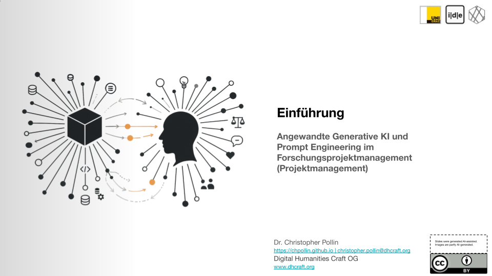

Session 1: Einführung
Grundbegriffe des Projektmanagements und Einführung in LLM und Prompt Engineering
Folien öffnenFreie Wahllehrveranstaltung für Digital Humanities Master
In dieser Lehrveranstaltung wird der Workflow eines DH-Projekts von der Konzipierung bis zur Publikation durchexerziert. Der Schwerpunkt liegt auf der Anwendung von Generativer KI, Large Language Models (LLM) und deren Werkzeugen im Projektmanagement, insbesondere Prompt Engineering und Context Engineering.
Grundbegriffe des Projektmanagements und Einführung in LLM und Prompt Engineering
Folien öffnen
Grundbegriffe von LLM, Prompt Engineering und Context Engineering
Folien öffnen
Dokumentation und Kennzeichnung der KI-Nutzung in wissenschaftlichen Arbeiten
Dokument öffnen
Kognitive Prozesse und ihre Relevanz für KI-gestützte Entscheidungsfindung
Dokument öffnenGenerative AI and Research Integrity: Ethische Richtlinien und Best Practices
Dokument öffnenOrt: SR 81.31